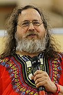

计算机名人堂
目录
1 Donald E.Knuth(高德纳)
| Works | 经典名著<计算机程序设计艺术>作者. 电子排版系统TeX(WIKI/Home)的作者. |
| WIKI | https://en.wikipedia.org/wiki/Donald_Knuth |
| Homepage | http://www-cs-faculty.stanford.edu/~uno/ |
| Birthday | January 10, 1938 |
| Portrait |  |
2 Richard Matthew Stallman
| Works | GNU Project发起人/领导者. GNU Emacs作者. |
| WIKI | https://en.wikipedia.org/wiki/Donald |
| Homepage | https://stallman.org/ |
| Birthday | March 16, 1953 |
| Portrait |  |
3 Alan Mathison Turing(艾伦·图灵)
| Works | 计算机科学与人工智能之父. 图灵测试是判定机器能否思考的知名测试. 图灵奖因他命名. |
| WIKI | WIKI-EN / WIKI-CN |
| Homepage | http://www.turing.org.uk/ |
| Birthday | June 23, 1912 |
| Portrait |
4 Dennis M. Ritchie
| Works | C语言之父，与Brian Kemighan实现UNIX |
| WIKI | WIKI-EN/WIKI-CN |
| Homepage | https://www.bell-labs.com/usr/dmr/www/ |
| Birthday | 1941/9/9 (And died in 2011/10) |
| Portrait |
5 Brian W. Kemighan
| Homepage | https://www.cs.princeton.edu/~bwk/ |